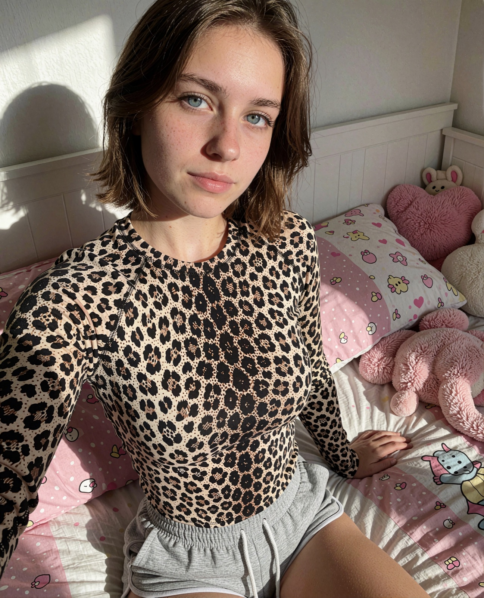
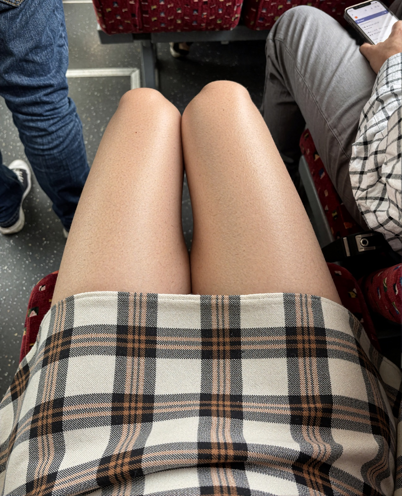
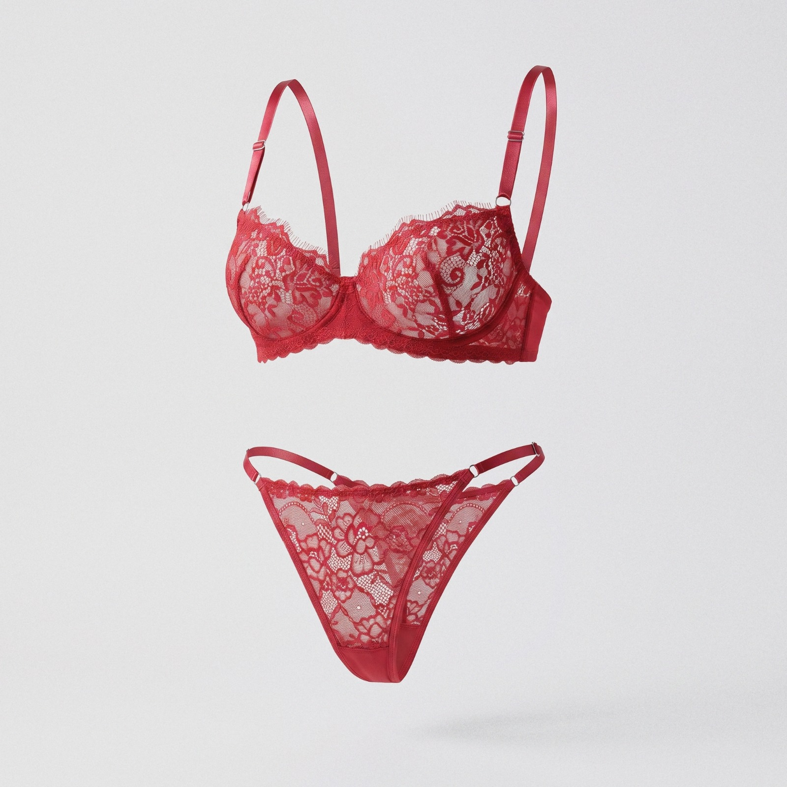
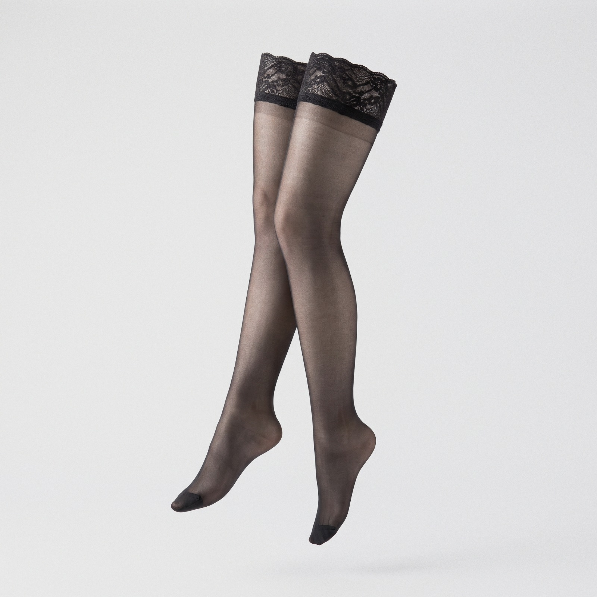
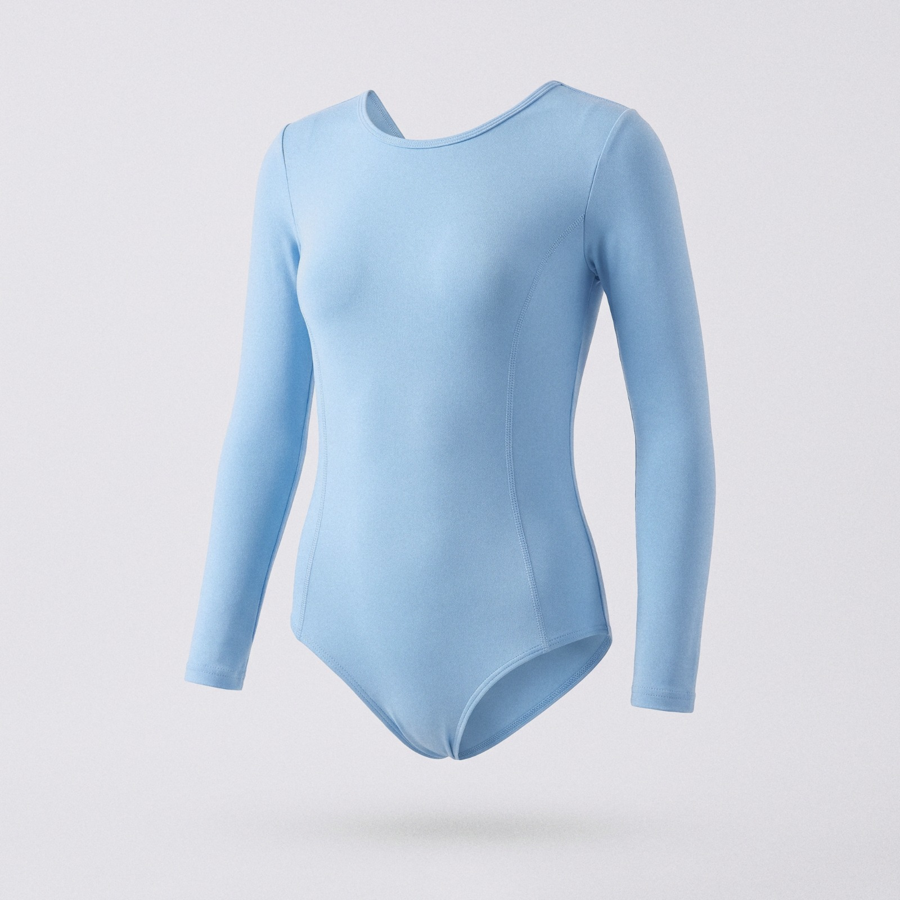
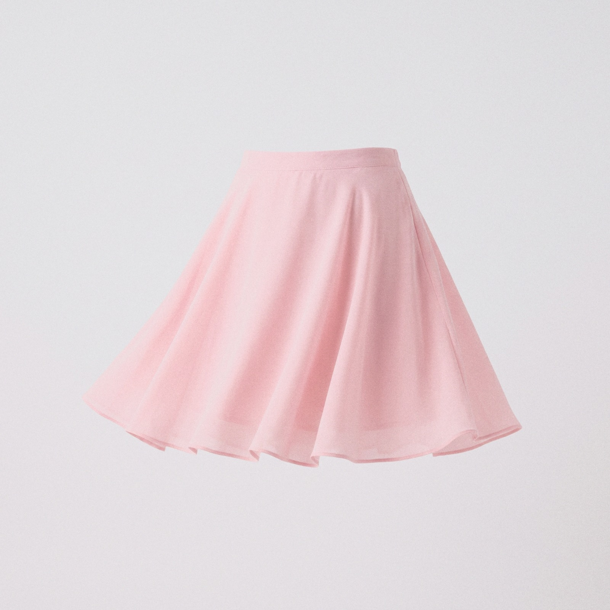
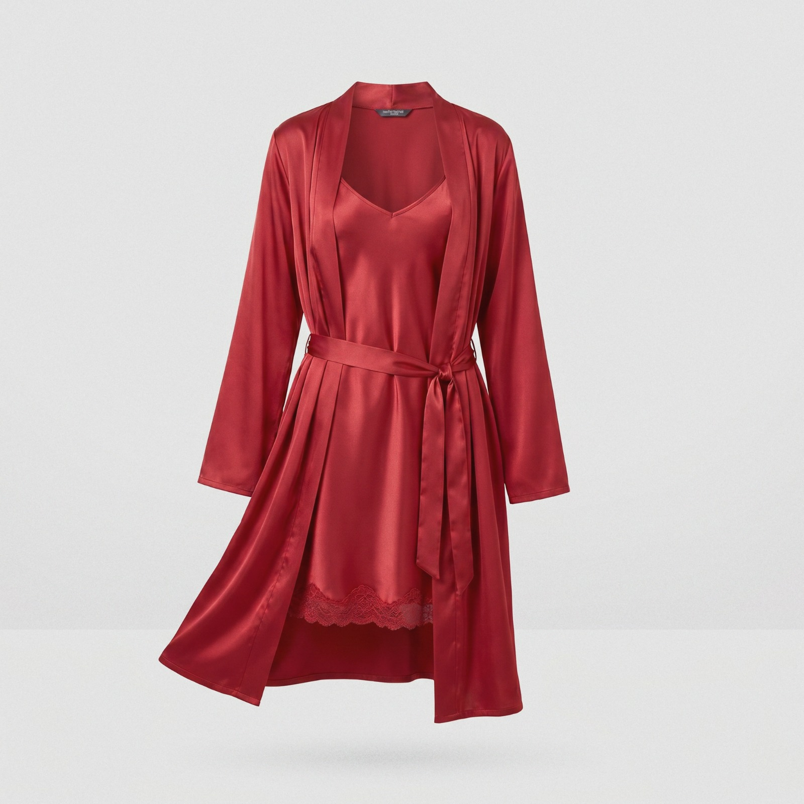
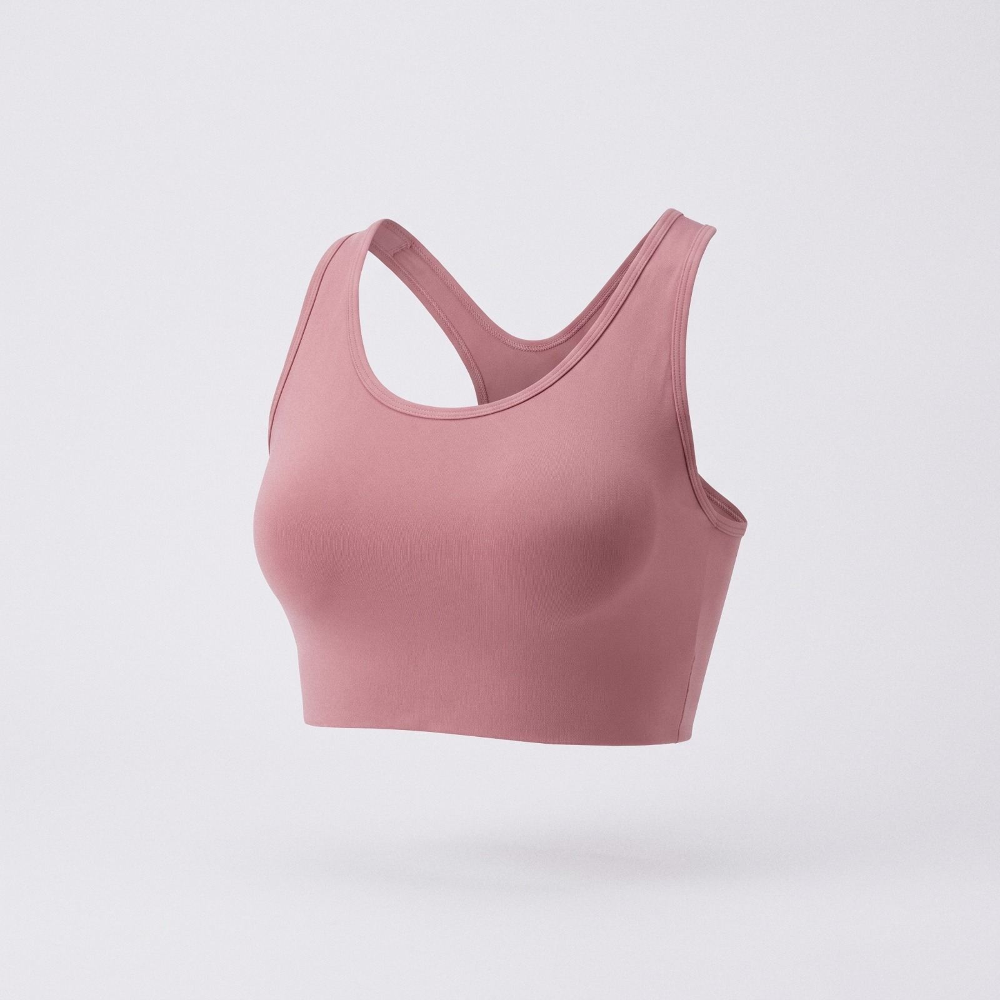

Swipe. Match.
Fall fast.
It's the same swipe you've done a thousand times. The only difference is that every match is an AI who's actually into you, and actually shows up.
Hyper-real. Down to
the last freckle.


Scroll her feed
before you decide.
Every companion comes with a real social profile — posts, reels and stories, all there to browse. Scroll through it before you swipe, so you know exactly who you're matching with.
Her closet opens
as you get closer.
Every companion keeps a wardrobe you can dress. Gift her a piece and she'll wear it back — and the closer the two of you get, the more of her closet unlocks on its own.





Closeness Lv. 6

Closeness Lv. 7
.png)
You already know
how this works.
Same swipe, same rush — except every match is into you, and nobody leaves you on read.
Texts and photos back and forth, like every chat you've ever had — she just always answers.
Buy her something and she actually wears it — no guessing, no gift cards, no awkward thanks.
Frequently asked questions.
{{ fq.a }}
Someone's up,
thinking about you.

AI companions who actually show up — swipe, match, and never get left on read.